Thengine
Lean UX — Research & Design
The Story
While Thengine's founders were attending The Founder’s Institute, they learned how important Storytelling and User Experience Design can be to the success of a product. When Thengine's Michael Catlin and I sat down for coffee to talk about story, the transition to UX was organic.
Michael and I met at Lighthouse, a Denver non-profit that holds workshops for writers. As a motion picture screenwriter out of LA, Michael had lots of interaction with the music and entertainment industry. He saw a fatal flaw in the industry and had a vision for how to fix it. His solution was Thengine.
I sat down with Michael and combed over the concepts that he and his partners had developed over their year at the Founder’s Institute.
The Problem
Thengine’s founders had dozens of brilliant ideas, and had so much they wanted to do, but didn’t have a clear idea about how to execute it or what it would look like.
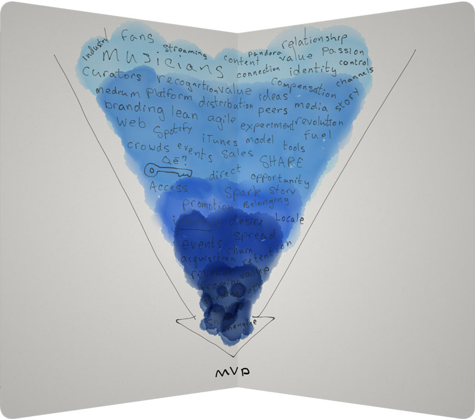The Goal
Create a Minimum Viable Product ("MVP") that represented Thengine’s long-term vision and provided a foundation that could grow exponentially in a very short amount of time.
My Process
Step 1. Brainstorm
This was my first UX project ever. My instincts led me to start the project by brainstorming ideas on a whiteboard. I began iterating over sample user stories, design language, and functionality concepts. The whiteboard has become my go-to tool for brainstorming. The flow of dry erase markers and dynamics of standing while writing make it a great fit for getting lots of ideas out quickly.
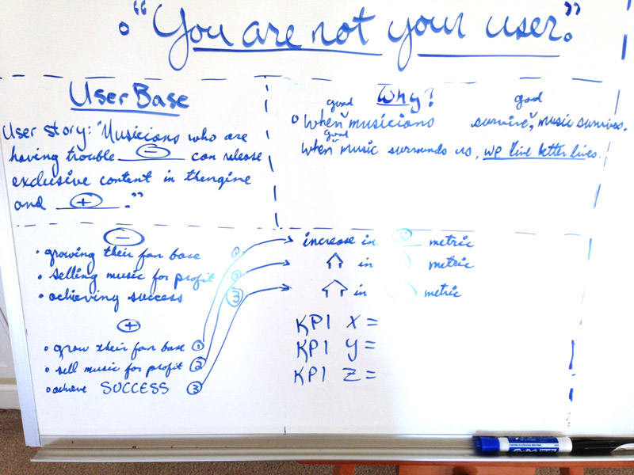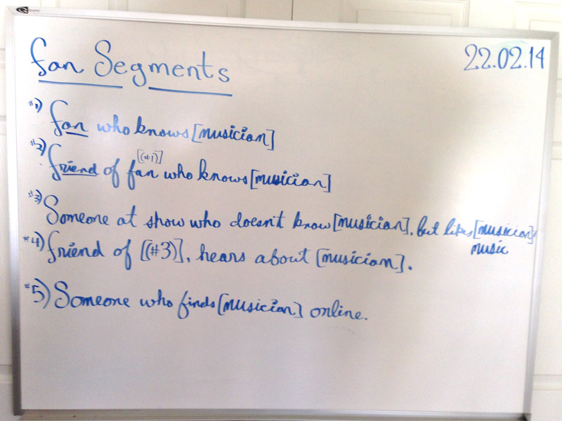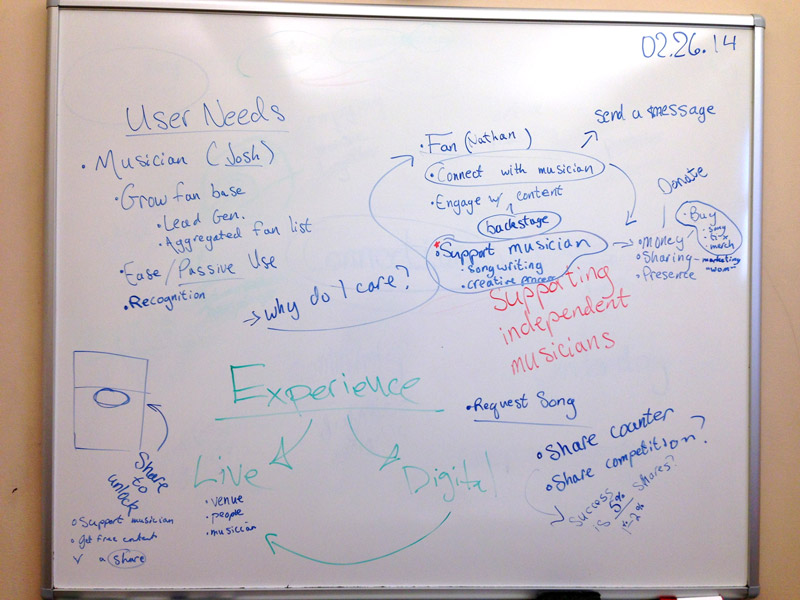I wanted to be clear about my approach and my workflow so I could manage expectations both verbally and in writing. I knew projects like these needed an explicit scope because they can run out of hand. I was reading UX for Lean Startups by Laura Klein and I based a lot of my research and design decisions from that text.
Step 2. Low-Fidelity Prototyping
For several months I read Zurb Foundation's Product Design Lessons every week and I learned quickly that design should start at very low-fidelity (as in on paper not on computer). It was fascinating to see the development of ideas as you moved from one concept to the next. Each idea had a center, and when I changed the center, the idea evolved around it. The more central concepts I tried, the more diverse the prototypes became.
This process was difficult at the start. I had never designed an interface from scratch before so This process was difficult at the start. I got involved in web design back in 2007 when I was building an ecommerce website for my custom clothing company Just Customs. Back then I was just copy-pasting and hacking my way through templates in Dreamweaver.
I had no real concept of interface design let alone designing for the needs of the user. It took me a while to get a hang of thinking about what the user needed rather than what I thought looked good. I still think designs have to resonate with your core sensibilities, but they should be backed by the rationale of a user story and their context and of course tested in front of core users.
Looking back at my low-fidelity prototypes, I realize I needed to relax my shoulders and focus on layout and hierarchy rather than details.
I was just getting into the concept of building a responsive front-end and you can see I was already thinking about the details of breakpoints and media queries. It's way too early in the process to worry about breakpoints. I learned now that breakpoints need to be dictated by the content on the site and individual components, not arbitrary device sizes.
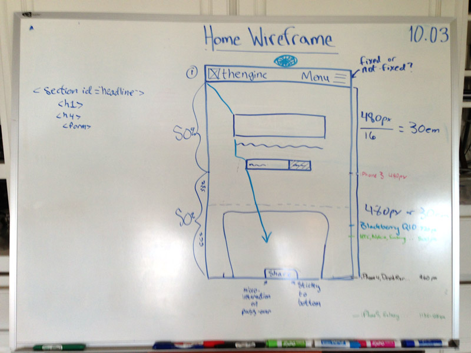 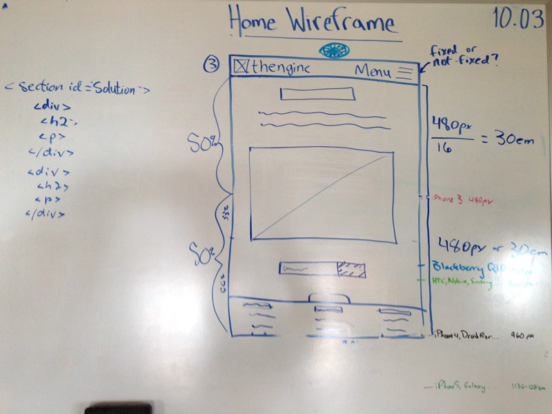
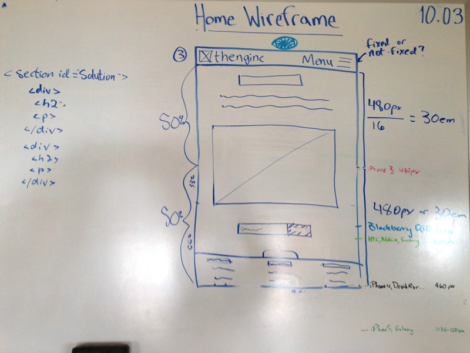
Step 3. Medium-Fidelity Prototyping
The founders of Thengine asked me to design a mobile app and present them as a pitch for them to consider me as a UX Designer. It was quite a big thing to pull off in the time alotted, but I'd never done a UX project before, so I obliged to give it a try.
These medium-fidelity prototypes weren't really derived from my low-fidelity sketches above. The gap came from a month-long pause where Thengine's founders were gathering funding for Alpha 1.
I made these medium-fidelity prototypes in Adobe Illustrator.
After pitching my approach and concept for Thengine, I was given the role of UX Designer and front-end developer. I had the honor of collaborating with the three founders, a marketer and a developer.
Step 4. User Research
I initiated a period of user research based upon my user segments of 'Musician' and 'Fan'. I conducted interviews with musicians and fans in person over coffee as well as across the nation over Skype.
Here are the questionnaires I wrote for each user segment:
Step 5. Create a Lean Hypothesis
From the results of the user research, I began to develop a Lean Hypothesis. I pushed Michael and his partners to boil Thengine down into a single sentence. We reviewed our research findings and together came up with:
A lean start-up experiment for musicians and their fans.
The hypothesis didn't come in the exact format I was looking for which clearly articulates the user, their problem, and the solution, but the exercise was definitely one of clarity. A hypothesis should be used to judge the effectiveness of an experiment. I'm not sure how Thengine's MVP could be judged based upon the Lean Hypothesis we produced, but it was a clarifying exercise nonetheless.
Step 6. Live Prototyping (Front-End Development)
I used Foundation 5 by Zurb to develop a live prototype of Thengine's MVP. After a phase of live wireframe tests, I made several iterations and settled on a final prototype or mock-up. The mock-up (no back-end functionality) can be seen here atThengine MVP.
This was the first time I had ever hand-crafted an interface in code. It was incredibly frustrating at times, yet highly rewarding at others. I had read Jon Duckett's HTML & CSS book, but the logic and syntax of Zurb Foundation's grid system took me a while to get used to.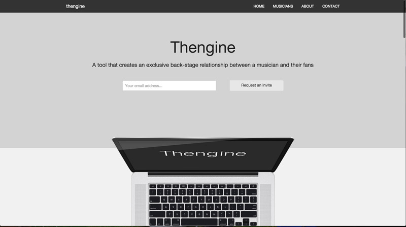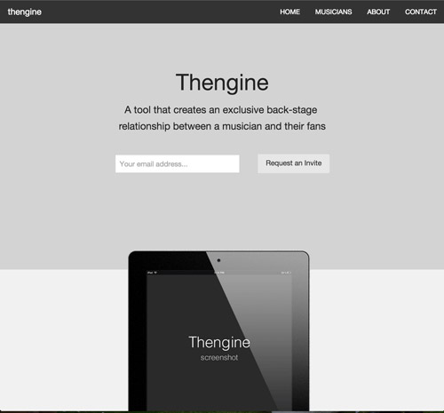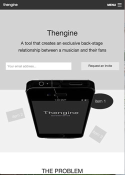
Step 7. Interaction Design
I read Dan Saffer's Microinteractions: Designing with Details and was compelled by the power of small visceral components with well designed interaction.
The idea that an application could create joy for its users through its interactivity was highly appealing to me. It wasn't just about the layout, hierarchy, color and imagery. It was about the way that the application responded to the user.
I lent my hand at designing a custom share button for Thengine. I wanted it to feel fun and encourage users to engage with it again and again.
Inspired by Path I designed a share icon that rotated and spun out buttons when clicked.
The Outcome
After several phases of user testing and iteration, I received a final approval from Thengine's founders and passed along my deliverable.
The project was incredibly hard work but it was my first step into the world of UX and I am happy with how my process helped Thengine take thousands of concepts in boil them into one tangible idea that was accessible on all devices from across the world.
Thengine is currently in a pre-alpha phase. Their Ruby on Rails developers are hard and work and we should be expecting a public beta sometime soon.
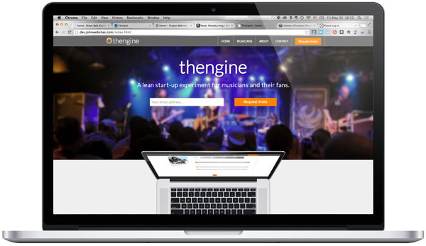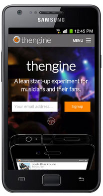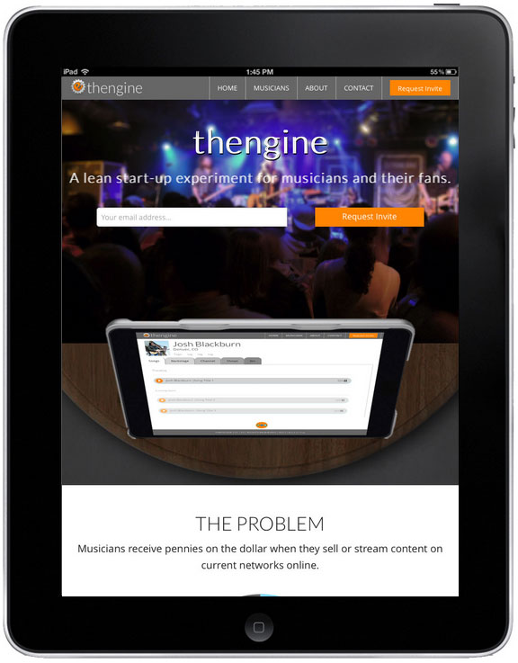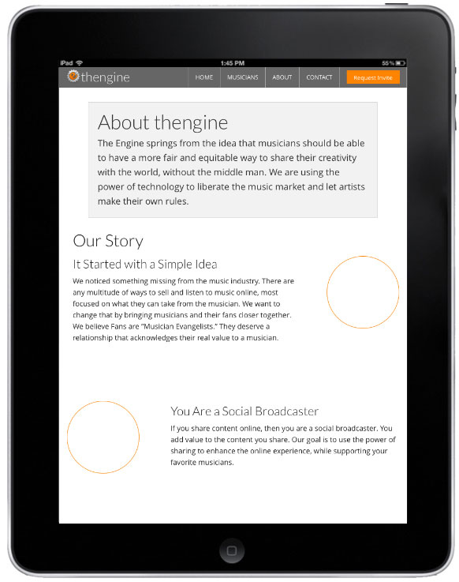